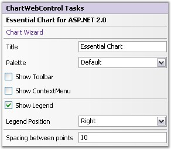

The tasks window has sufficient properties exposed in the right manner for users to be able to get started intuitively.

Figure 317: Chart Web control Tasks Window
Tasks
Title
Used to add title to the Chart directly from the Tasks Window.
Palette
The Palette that is to be used to provide default colors for the chart series and other chart elements. Allow Gradient Palette property is used to enable or disable the gradient values of the palettes.
ShowLegend
Specifies if the legend is to be displayed or not.
Legend Position
Configuration information of the Legend object.
|
ChartLegend.Position Properties |
Description |
|
Top |
Positions the legend panel to the Top of Chart. |
|
Left |
Positions the legend panel to the Left of Chart. |
|
Right |
Positions the legend panel to the Right of Chart. |
|
Bottom |
Positions the legend panel to the Bottom of Chart. |
|
Floating |
Will not be docked to any specific location. Can be docked manually by dragging the Legend panel. |
Show ToolBar
Specifies if the ToolBar is to be displayed or not.
Show ContextMenu
Specifies if the ToolBar context menu is to be displayed or not.
Spacing Between Points
Specifies the spacing between the series points.